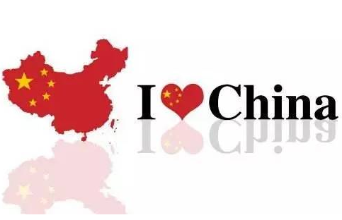
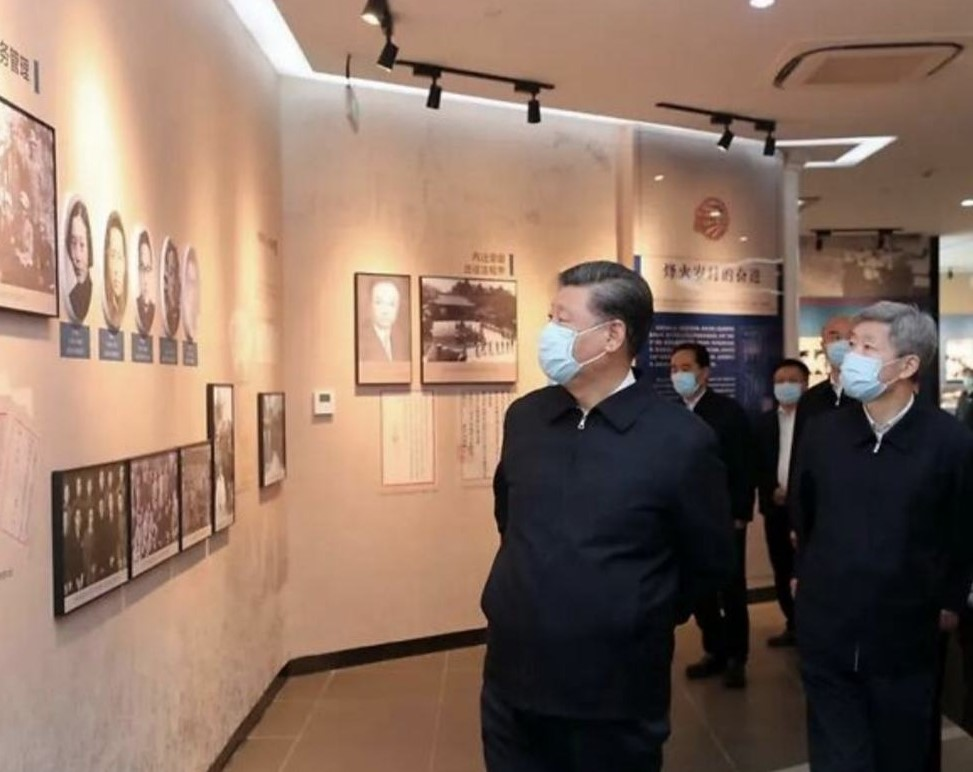

资讯
热点社评
校内快讯
爱国人物科普
爱国知识科普
疫情防护科普
登录虎嗅
短信快捷登录
+86
登 录
极速注册
+86
注 册
活动-天大毛概
爱国文章专栏
这十个爱国常识，很多人不知道

查看全文
这十个爱国常识，很多人不知道
爱国应该在中国法律框架内进行，僭越法律底线的“爱国”行为只能授人以柄，损害国家形象，使亲者痛、仇者快。戾气并非正义，只有理性爱国、奋力强国、精心治国，才能真正捍卫国家和民族的尊严。
在汾河之滨，读懂习近平生态文明思想的丰富内涵
查看全文
在汾河之滨，读懂习近平生态文明思想的丰富内涵
“要牢固树立绿水青山就是金山银山的理念，发扬‘右玉精神’，统筹推进山水林田湖草系统治理”，5月12日，习近平总书记在山西考察时特别强调要弘扬“右玉精神”。
揭穿美方18个谣言画皮
查看全文
揭穿美方18个谣言画皮
疫情肆虐，人命关天。病毒是人类的共同敌人，全世界都应该携手共同应对疫情挑战。然而以美国为代表的西方一些政客和媒体不把精力放在抗击疫情上面，却费劲心机“甩锅”中国，编造了各种匪夷所思的谎言。一时间，谎言、谣传和阴谋论甚嚣尘上。来看看新冠肺炎疫情中关于中国的18个最常见谣言和事实真相。
中国精神在战“疫”中的生动体现
查看全文
中国精神在战“疫”中的生动体现
岁末年初，一场突如其来的新冠肺炎疫情仿佛给我们按下暂停键，我们不得不改变工作、学习及生活的轨迹。在以习近平同志为核心的党中央统一领导下，举国上下齐动员，勠力同心抗疫情。今天，我们已经度过了最艰难的时刻，疫情防控形势持续向好。之所以取得这样的成果，是因为有伟大的民族精神的支撑。
推进马克思主义本土化大众化
查看全文
推进马克思主义本土化大众化
习近平总书记在云南考察时强调，我们现在就需要像艾思奇那样能够把马克思主义本土化讲好的人才。我们要传播好马克思主义，不能照本宣科、寻章摘句，要大众化、通俗化。这一重要论述，为传播马克思主义、做好马克思主义理论研究工作指明了方向。
中国疫情防控彰显党的体制优势
查看全文
中国疫情防控彰显党的体制优势
面对这次来势凶猛的新冠肺炎疫情，在习近平总书记和党中央的坚强领导下，举国上下同时间赛跑、与病魔较量，从中央到地方、从机关到基层、从城市到乡村、从内陆到边疆等各条战线、各个领域、各个方面，紧急行动、全力奋战、英勇奋战、团结奋战，打响了疫情防控的人民战争。
传承红色基因 汇聚复兴伟力
查看全文
传承红色基因 汇聚复兴伟力
习近平总书记反复告诫全党同志，“不能忘记红色政权是怎么来的、新中国是怎么来的、今天的幸福生活是怎么来的”，一再叮嘱“把红色基因传承好，确保红色江山永不变色”，向全党全社会注入铭记历史、缅怀先烈、传承红色基因的不朽信念。新中国成立以来波澜壮阔的实践表明，红色基因永远是激励我们砥砺前行的强大正能量。
西迁精神跨越时空

查看全文
西迁精神跨越时空
习近平总书记在西安交通大学考察时，亲切会见14位西迁老教授，重提轰轰烈烈的“西迁”壮举，勉励广大师生大力弘扬“西迁精神”，抓住新时代新机遇，到祖国最需要的地方建功立业，在新征程上创造属于我们这代人的历史功绩。
我国基本经济制度具有显著优势的原理
查看全文
我国基本经济制度具有显著优势的原理
公有制为主体、多种所有制经济共同发展，按劳分配为主体、多种分配方式并存，社会主义市场经济体制等社会主义基本经济制度，不仅同我国社会主义初级阶段社会生产力发展水平相适应，具有不断解放和发展社会生产力的显著优势；而且深刻体现社会主义本质要求。
五四运动在中共党史研究中的地位
查看全文
五四运动在中共党史研究中的地位
1942年3月，毛泽东在中央学习组指导学习研究中共党史时明确指出，我们研究党史，只从1921年起还不能完全说明问题，恐怕要有前面这部分的材料说明共产党的前身。这前面的部分扯远了嫌太长，从辛亥革命说起差不多，从五四运动说起可能更好。中国共产党成立的思想、干部、阶级条件都是在五四运动期间奠定的。
“中国之治”的显著优势
查看全文
“中国之治”的显著优势
党的十九届四中全会《决定》将中国特色社会主义制度和国家治理体系的显著优势概括为13个方面。这一重要论断和科学概括，体现了以习近平同志为核心的党中央对中国特色社会主义建设规律认识的深化，体现了中国特色社会主义制度和国家治理体系建立、完善、发展的历史逻辑、理论逻辑、实践逻辑。
进一步发挥人民代表大会制度优势
查看全文
进一步发挥人民代表大会制度优势
党的十九大指出，人民代表大会制度是坚持党的领导、人民当家作主、依法治国有机统一的根本政治制度安排，是支撑中国国家治理体系和治理能力的根本政治制度。
“一国两制”具有深远历史意义
查看全文
“一国两制”具有深远历史意义
中国特色社会主义的一个重要“特色”就是“一国两制”。邓小平明确指出，“一国两制”这个构想是在中国的实际情况下提出来的。正因为如此，“这就叫中国特色”。他还明确将“一国两制”与中国特色社会主义制度联系起来。